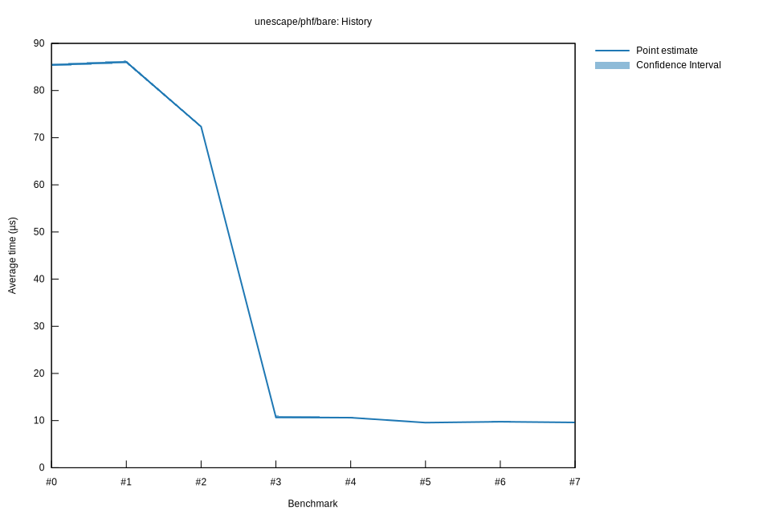

# 52025-10-31T17:48:31-07:00
|
Lower Bound |
Estimate |
Upper Bound |
| Value: |
9.53µs |
9.57µs |
9.61µs |
| Throughput: |
1690.97MiB/s |
1684.47MiB/s |
1677.28MiB/s |
| Change in Value: |
-13.904% |
-12.156% |
-10.514% |
| Change in Throughput: |
+16.149% |
+13.838% |
+11.749% |
No change in performance detected.
# 42025-10-29T22:27:22-07:00
|
Lower Bound |
Estimate |
Upper Bound |
| Value: |
10.51µs |
10.62µs |
10.75µs |
| Throughput: |
1532.98MiB/s |
1517.27MiB/s |
1498.57MiB/s |
| Change in Value: |
+1.8482% |
+4.1847% |
+6.3537% |
| Change in Throughput: |
-1.8147% |
-4.0166% |
-5.9741% |
No change in performance detected.
# 32025-10-29T22:20:45-07:00
|
Lower Bound |
Estimate |
Upper Bound |
| Value: |
10.46µs |
10.71µs |
11.07µs |
| Throughput: |
1540.20MiB/s |
1504.46MiB/s |
1456.09MiB/s |
| Change in Value: |
-85.751% |
-85.508% |
-85.208% |
| Change in Throughput: |
+601.79% |
+590.04% |
+576.06% |
No change in performance detected.
# 22025-10-29T19:45:09-07:00
|
Lower Bound |
Estimate |
Upper Bound |
| Value: |
72.11µs |
72.34µs |
72.57µs |
| Throughput: |
223.45MiB/s |
222.75MiB/s |
222.04MiB/s |
| Change in Value: |
-16.765% |
-16.024% |
-15.157% |
| Change in Throughput: |
+20.141% |
+19.081% |
+17.864% |
No change in performance detected.
# 12025-10-29T19:01:58-07:00
|
Lower Bound |
Estimate |
Upper Bound |
| Value: |
85.77µs |
86.06µs |
86.36µs |
| Throughput: |
187.86MiB/s |
187.23MiB/s |
186.57MiB/s |
| Change in Value: |
+0.2488% |
+1.0564% |
+1.9598% |
| Change in Throughput: |
-0.2482% |
-1.0453% |
-1.9221% |
No change in performance detected.
# 02025-10-26T16:46:19-07:00
|
Lower Bound |
Estimate |
Upper Bound |
| Value: |
85.16µs |
85.42µs |
85.68µs |
| Throughput: |
189.22MiB/s |
188.65MiB/s |
188.07MiB/s |